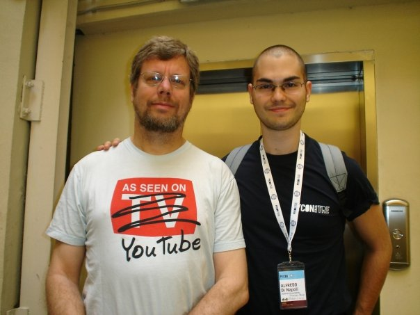

Welcome to my website
Hi, I'm Alfredo Di Napoli, and I'm a 24-years-old guy with passion for 3D graphics and game design. Since when I was young, I looked with amazed glance to 8 bit games, and emotions and passion survived until now. My childhood dream is to be a part of a game development team, and develop the same games that entertained me as child.
Within this site you will find every kind of information about me: my portfolio, my blog (externally hosted, for now), where I'm currently living and finally my email and other social stuff. And If you are the CEO of a game development company, just click on the "Hire me" button!
My education
Since when I was 13, I attended informatic-oriented schools. From 2001 to 2006 I attended Istituto Tecnico Commerciale "V. Arangio Ruiz", graduading with 100/100. Next I switched to Roma Tre University, where I took my Bachelor of Science in Computer Engineering in 2009 with 110/110, and part of my thesis were presented as In Proceeding of IUI 2010 Workshop on Social Recommender Systems (here). Nowadays I'm next to my Master of Science. I'm working on a parallel framework for my senior thesis.
My skills
I've a discrete background in Java, being the language most taught within my university. By the way, I've studied on my own a bunch of other interesting programming languages:
- Python
- C/C++
- Haskell
- Common Lisp
- Clojure
Python
I've spent several months learning Python, due to its expressiveness, high level of abstraction and power. Two years ago I attended the "PyCon 3" conference and I met Guido Van Rossum, the creator of the language.
I can consider Python one of my favourite languages, because it's easy to start with, and everything works like expected. I've even experience with a Python web framework, Django, because I've realized most of my Bachelor thesis with it. Python's lacks of concurrency can be fixed using some ad-hoc implementations, such as Stackless Python.
C/C++
I'm relatively new to C++, but I like it a lot. I've started studying it through the excellent Meyers' book and Koenig's "Accelerated C++". I've decided studying it due to my passion: if you want to be a game developer, forget Java! When performance matters, you need to know C/C++. I'm currently studing C++ advanced concept like Templates through the outstanding Andrei Alexandrescu's Modern C++ Design: Applied Generic and Design Patterns.
Haskell
Haskell is an amazing functional language: it's expressive, smart, beatiful to write, and reasonably fast. I started learning Haskell one year ago, but I stopped due to lack of time. Recently, thanks to the fantastic book "Learn you a Haskell for Great Good!" I was totally carried away from Haskell. As a matter of fact, this site is written using a simple but powerful static website generator written in Haskell, Hakyll.
Common Lisp
Common Lisp is an amazing but underrated language. I've studied it due
to my other passion: functional languages.
In my opinion functional programming is very funny and addictive, but you can love it or hate it.
I've studied CL through the funniest book in the galaxy,
"The Land of Lisp: Learn to program in Lisp, one game at time."
Clojure
Sometimes called "The modern Lisp", Clojure is a Lisp-like language with an eye to concurrency and dynamic programming (and metaprogramming). I love Clojure, so I've realized a bunch of project with it.
Lo and Behold
The list of languages I've been exposed to is much longer, but these are the language I've used or I'm using most. You can find a detailed list of my Linkedin profile (search under Hire me section).
The future
I don't know what I'm going to do after graduating, but I hope it will be something exciting
and challenging, something worth getting up in the morning. How Confucio said:
"Choose a job you love, and you will never have to work a day in your life."